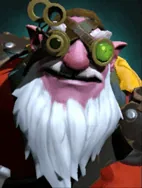
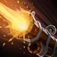

Assassinate
Targeted Active ability: Activate on full mana
Sniper locks onto a target enemy chess piece and, after a short aiming duration, fires a devastating shot that deals massive physical damage at long range.
| ★ | ★★ | ★★★ | |
|---|---|---|---|
| Damage | 400 | 600 | 1000 |
| Projectile speed | 2500 | 2500 | 2500 |
| Cooldown (s) | 10 | 8 | 6 |
| Mana cost | 100 | ||
To fulfill the prophecy and return to his hometown, Kardel must make another shot as perfect as the one on the day of his ancient test.
Stats
| ★ | ★★ | ★★★ | |
|---|---|---|---|
| Health | 450 | 900 | 1800 |
| Mana | 100 | 100 | 100 |
| Armor | 4 | 4 | 4 |
| Magic resistance | 0% | 0% | 0% |
| Attack damage | 50–60 | 100–120 | 200–240 |
| Attack interval (s) | 1.3 | 1.3 | 1.3 |
| Attack range | 600 | 600 | 600 |
| Move speed | 500 | 500 | 500 |
 Dwarf · Take Aim
Dwarf · Take Aim
- (2) Dwarves gain +200 attack range. Their physical damage grows with distance to the target: about +10.6% per square in a straight line (+15% per diagonal square).
 Hunter · Aimed Shot
Hunter · Aimed Shot
Hunters always attack the enemy with the lowest current health within attack range. Wizards and other low-priority units are picked last.
- (3) Hunters' attacks have a 50% chance to be a precise shot: it can't miss and gives -5 armor for 5s.
- (6) Hunters get a separate 80% chance for a precise shot: it can't miss and gives -8 armor for 8s. This stacks with the (3) debuff.
- (9) Precise shots also knock the target back 1 grid and trigger an extra attack (at most once every 0.5s).